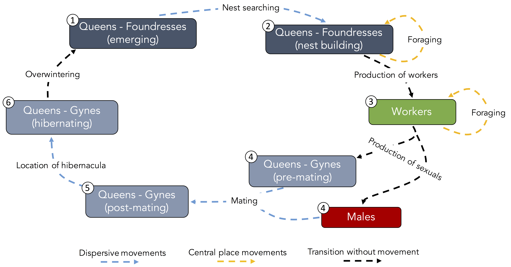
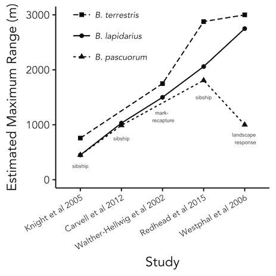

Bumble bee movement ecology
Knowing the scales at which organisms operate throughout their life is a critical component to ecological research and species conservation. After all, a valuable habitat that is wholly inaccessible to an individual, directly or indirectly, does not impact its fitness.
 Figure 1: A typical bumble bee life cycle with the different movement phases labeled.
For bumble bees in particular, their movement patterns change with life stage, caste, behavioral phases, and response to landscape pattern. Research interest in their movement dates back at least to Darwin, but much is still to be learned. It is especially important to understand their movement ecology as mobile agents who pollination many of the world’s wild and crop plants.
The bumble bee life cycle consists of several distinct phases and opportunities for movement (Figure 1). Yet, for most components, little is known about when, why, and how far individuals move. For instance, we have some crude estimates of worker foraging distance for several species, but the scale of movement for queens and males is relatively unknown. Further, what we do know is often complicated by differences in methodology, study region, and even in how researchers use terminology (Figure 2).
 Figure 2: Differences in foraging range between studies of common species. While the relative rank of species remains constant, large differences exist in the magnitude of movement between studies.
My work seeks to improve our estimates of movement, understand queen foraging and dispersal, and to apply our estimates to practical problems in species conservation such as the impact of corridors, barriers, and land-use change. I use a combination of genetic techniques, landscape ecology, and rigorous field work to address these issues.
I will soon be updating this page with further reading on the topic